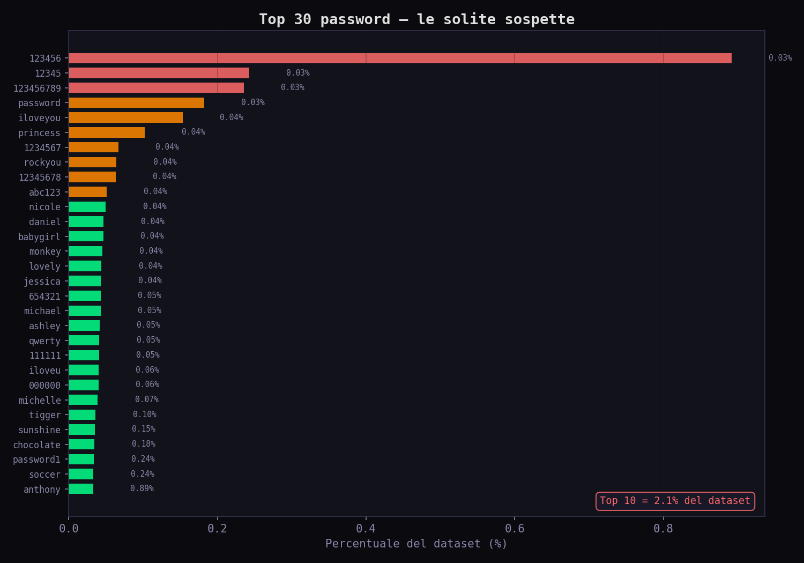
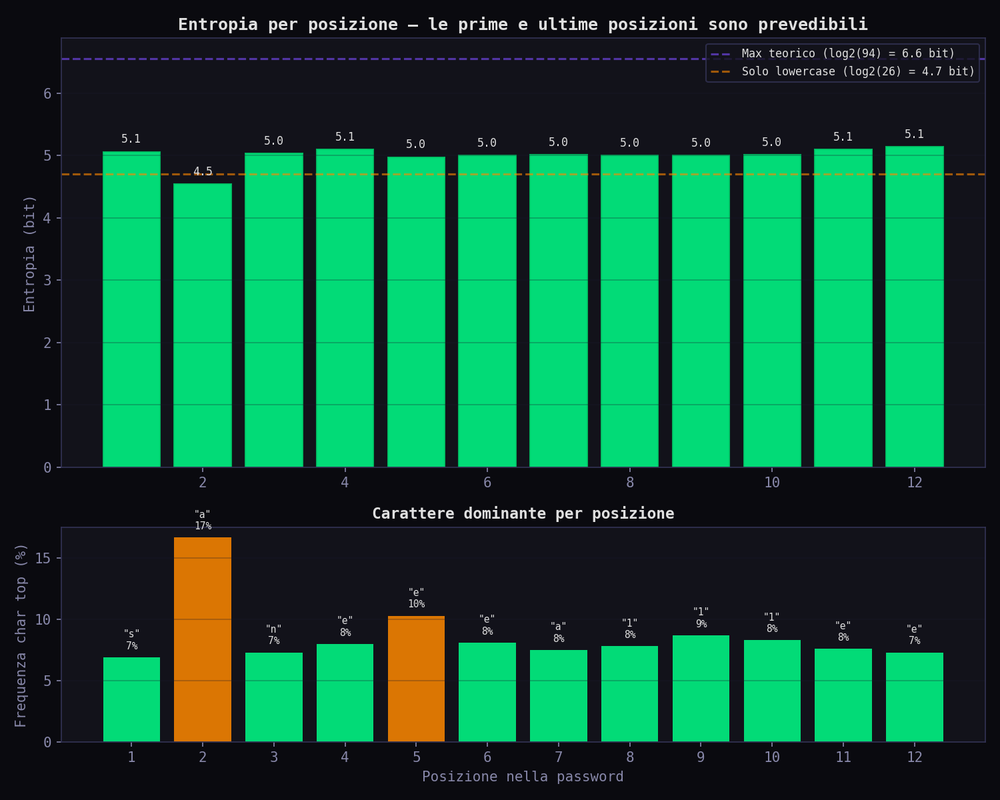
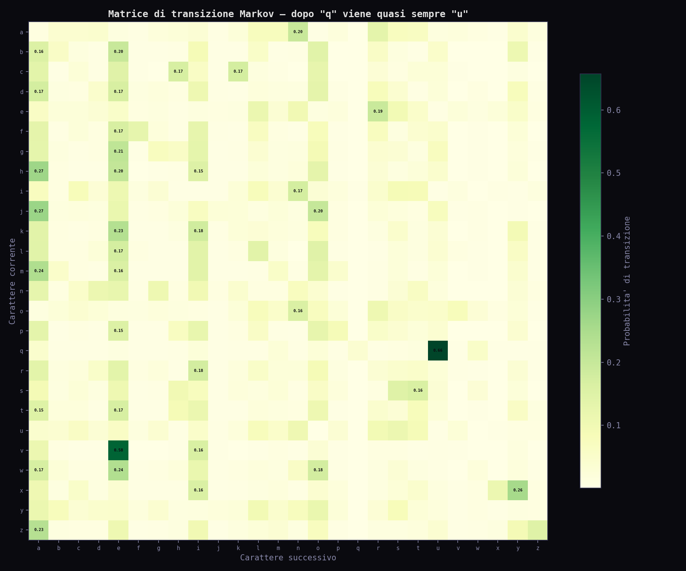
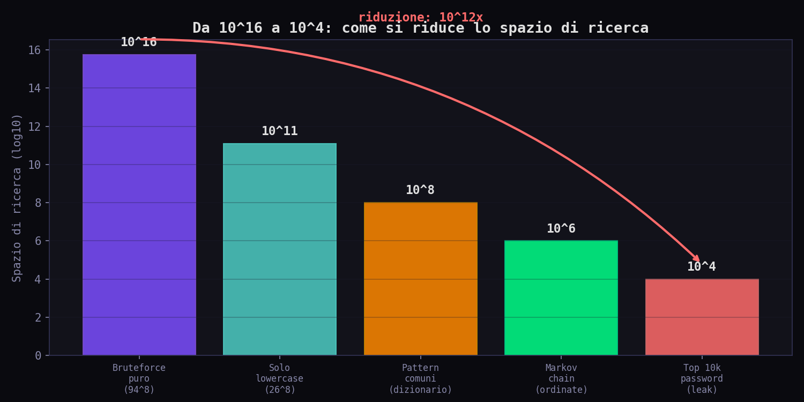
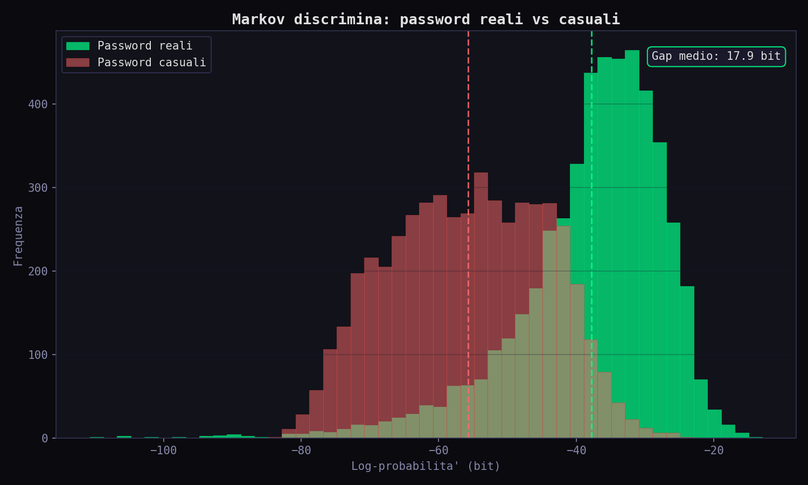
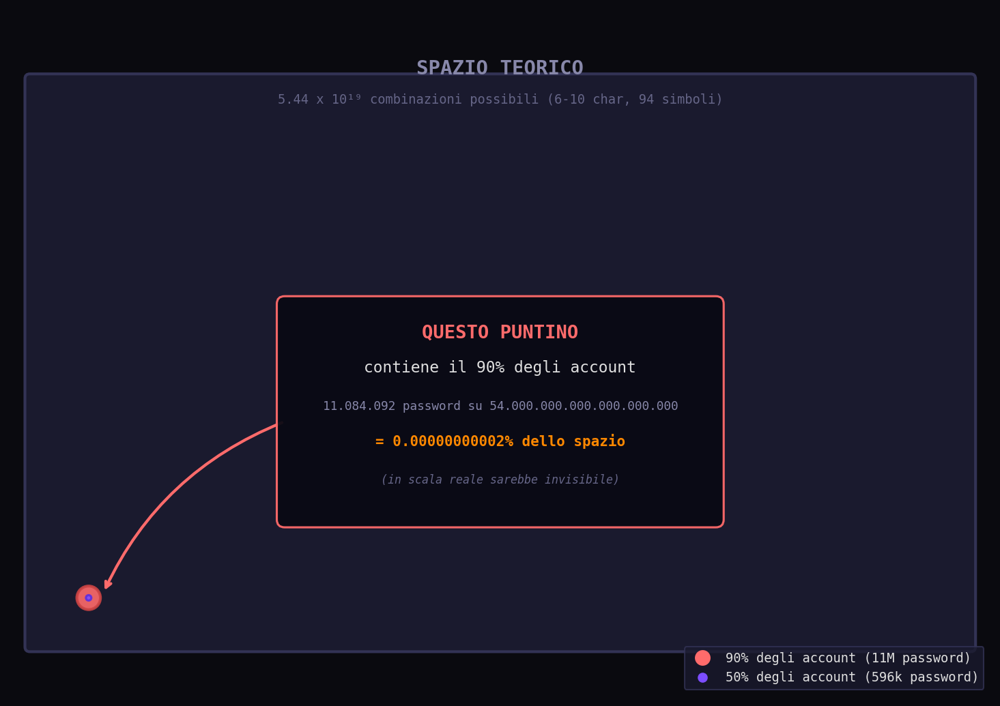

// La Cena Dove Ho Capito Il Problema
Sezione 01. Lo spazio delle illusioniCena. Una di quelle cene con gente che non hai scelto tu, dove finisci seduto accanto al marito della collega di tua moglie. Lui fa l'impiegato in un'azienda grande, di quelle con la VPN e il badge. A un certo punto, tra il secondo e il dolce, parte il discorso. "No ma io la password la cambio tutte le settimane." Lo dice serio. Lo dice orgoglioso. Lo dice come se stesse raccontando di aver completato una maratona. "Tutte le settimane?" gli chiedo. "Sì, tutte le settimane. Per sicurezza. Ce lo chiede l'azienda."
Ho annuito. Ho bevuto l'Amarone. Ho capito che c'era un problema, e non era il vino. Ho fatto finta di nulla per tutto il dolce. In macchina, sulla via del ritorno, la iena me lo chiede: "Ma quello che diceva sulla password, è giusto?" Rispondo ovviamente no.
Il punto non è quanto spesso cambi password. Il punto è come la scegli. E so già come la sceglie, quel tizio. Lo so perché lo fanno tutti allo stesso modo. Prima scelta: Mario2023!. Cambio obbligatorio: Mario2024!. Cambio successivo: Mario2024!!. O Mario2025!. L'azienda gli chiede di cambiare password ogni settimana e lui incrementa un contatore. Come un orologio. Come un PRNG con seed "Mario" e periodo 7 giorni. La iena, tra l'altro, ha lo stesso identico pattern. Solo che la iena usa il nome del cane. Il cane si chiama Panna. Panna2024!. Se il cane cambia nome, la iena cambia base. L'entropia del matrimonio è negativa.
Otto caratteri. Charset 94 (lettere, numeri, simboli). Spazio teorico: \(94^8 \approx 6.1 \times 10^{15}\) combinazioni. Sei milioni di miliardi. Un numero che sembra enorme. Che farebbe paura a un bruteforce puro, sequenziale, dal primo all'ultimo. Ma il punto è proprio qui: nessuno fa bruteforce puro. Nessuno parte da aaaaaaaa e arriva a }}}}}}}. Quello è il modo più stupido possibile di attaccare una password. Ed è il modo che tutti si immaginano.
// 32 Milioni Di Password Reali
Sezione 02. Il dataset RockYouPer parlare di password servono password. Nel dicembre 2009, un attaccante buca RockYou, un'azienda che faceva widget per MySpace. Sì, MySpace. Era il 2009. Il punto: le password erano salvate in chiaro. Trentadue milioni. Trentadue milioni di password reali, scelte da persone reali, per account reali. Il dataset viene pubblicato e diventa la Stele di Rosetta della ricerca sulle password.
Arrivati a casa apro il terminale. Perché dopo 26 anni di matrimonio, la sera a letto si spiegano le password. Come quando ho smontato il Mersenne Twister pezzo per pezzo, o quando ho analizzato i pattern stilometrici degli LLM, il primo passo è sempre lo stesso: conta, misura, guarda i numeri. Ho scritto 01_analisi_distribuzione.py. Carica il dataset, conta le lunghezze, le frequenze, la composizione.
Primo risultato, primo schiaffo: la password più usata è 123456. 290.729 persone su 32 milioni. Lo 0.89%. Una password su 112 è 123456. La seconda è 12345. La terza è 123456789. Le prime dieci password coprono il 2% dell'intero dataset. Trentadue milioni di persone e 650.000 scelgono tra dieci opzioni. Quel tizio della cena non è solo. È una statistica.

La distribuzione delle lunghezze racconta la stessa storia. Il picco è a 6 caratteri. Nel 2009 molti siti non avevano neanche il minimo di 8. Il cervello umano è pigro: se può mettere meno caratteri, ne mette meno.
E la composizione? Il 58% delle password usa solo lettere minuscole o solo cifre. Più della metà del dataset usa un charset di 26 o 10 caratteri, non 94. Quel tizio della cena con il suo punto esclamativo è già nella minoranza. Ma segue lo stesso pattern di tutti gli altri: parola + numeri + simbolo. Ed è esattamente il pattern che un attaccante prova per primo.
// L'Entropia Che Mente
Sezione 03. Spazio teorico vs spazio realeIl concetto di entropia viene dalla termodinamica, poi Shannon l'ha rubato per la teoria dell'informazione. L'idea è semplice: l'entropia misura l'imprevedibilità. Più una cosa è prevedibile, meno entropia ha.
Entropia di Shannon. p_i = probabilità dell'i-esimo simbolo.
Per una password di 8 caratteri con 94 simboli possibili, l'entropia teorica è:
52.4 bit. Se ogni carattere fosse scelto uniformemente a caso.
Ma nessuno sceglie uniformemente a caso. Se lo facesse, genererebbe password come k$9Fz&mQ. Invece genera password1. La parola "password" ha un'entropia per carattere di circa 2.5 bit (le lettere si ripetono, i pattern sono prevedibili). Il numero "1" alla fine aggiunge 3.3 bit (perché i numeri sono 10). Il risultato reale? Circa 15 bit per l'intera password. Non 52.4. Quindici.
La differenza tra 52.4 e 15 bit non è una differenza: è un abisso. \(2^{52.4} \approx 6 \times 10^{15}\). \(2^{15} = 32.768\). Dalla galassia alla fermata dell'autobus. E questo è il punto che Marco non capisce: la sicurezza di una password non dipende da quanti tipi di caratteri usa. Dipende da quanto è imprevedibile. Marco2024! ha maiuscole, numeri e simboli. Un password meter la segna come "forte". Ma è il terzo tentativo che un attaccante fa dopo aver provato Marco2023! e Marco2022!.
Occhio: ho scritto 02_entropia_reale.py per calcolare l'entropia reale per posizione. Risultato: la prima e l'ultima posizione sono le più prevedibili. La prima è quasi sempre una lettera minuscola. L'ultima è quasi sempre un numero o !. Le posizioni centrali hanno più entropia, ma comunque molto meno di \(\log_2(94)\). Il pattern è ovunque.

// Dizionari + Regole: La Prima Riduzione
Sezione 04. Da 10¹⁵ a 10⁸
Un attaccante non parte da zero. Parte da una lista. Le password leakate (RockYou, LinkedIn, Adobe, Collection #1) sono pubbliche. Milioni di password reali, ordinate per frequenza. Il primo passo è provarle tutte così come sono: 123456, password, iloveyou. Questo da solo cracka il 5-10% di qualsiasi database.
Poi arrivano le regole di mutazione. Hashcat e John the Ripper hanno motori di regole che trasformano ogni parola del dizionario in decine di varianti:
| Regola | Esempio | Copertura |
|---|---|---|
| Capitalizza prima lettera | password → Password | ~8% delle password |
| Aggiungi numero | password → password1 | ~15% delle password |
| Aggiungi anno | marco → marco2024 | ~6% delle password |
| Leet speak | password → p4ssw0rd | ~3% delle password |
| Aggiungi simbolo | password → password! | ~4% delle password |
| Capitalizza + numero + simbolo | password → Password1! | “password complessa” |
Un dizionario di 100.000 parole con 50 regole produce 5 milioni di candidati. 5 milioni su \(6 \times 10^{15}\). Lo spazio si è ridotto di un fattore \(10^9\). E già così si coprono il 30-40% delle password reali. Marco con Marco2024! cade alla regola "capitalizza + anno + simbolo". La iena con Panna2024! cade alla stessa. Il cane non li salva.
// Catene Di Markov: La Svolta
Sezione 05. Il modello che impara i pattern
I dizionari funzionano, ma hanno un limite: coprono solo le parole che contengono. Se qualcuno sceglie fluffy99 e "fluffy" non è nel dizionario, non la trovi. Le regole espandono ma non inventano. Serviva un modo per generare password realistiche, non solo mutare quelle note.
La risposta arriva da un matematico russo del 1906: Andrei Markov. L'idea è di una semplicità feroce: la probabilità del prossimo carattere dipende dai caratteri precedenti. Non da tutti. Solo dagli ultimi N. Questo è un modello di Markov di ordine N.
Approssimazione markoviana di ordine n. Il futuro dipende solo dal passato recente.
Tradotto in password: dopo la lettera "q" viene "u" nel 65.7% dei casi. Dopo "pa" viene quasi sempre "ss". Dopo "passw" viene quasi sempre "o". Il modello non sa cosa sia una password. Non conosce l'inglese. Non sa niente. Ma impara le transizioni statistiche dal dataset, e da quelle genera sequenze che sembrano password reali. Perché lo sono.
Ho scritto 03_markov_attack.py. Addestra un modello di Markov di ordine 2 su 26 milioni di password (80% del dataset RockYou), poi genera 20.000 candidate ordinate per probabilità. Il codice è breve. Preoccupantemente breve:
La classe addestra in 64 secondi su 11.4 milioni di password uniche. 11.956 prefissi, 7.930 pattern di inizio. La matrice di transizione rivela tutto: le combinazioni di lettere che gli umani preferiscono, i pattern linguistici, le abitudini.

La cosa bella (e terrificante) è che il modello non sta "indovinando". Sta prevedendo. Per ogni candidata, calcola la log-probabilità: un numero che dice "quanto è plausibile questa sequenza, dato ciò che ho visto". Poi ordina. E le password reali saltano fuori nelle prime posizioni.
Il punto: un modello di Markov del 1906, con 30 righe di Python, addestrato in un minuto su 32 milioni di password, genera candidate più efficaci di un bruteforce che gira per settimane. "password" ha probabilità Markov di 5.47 × 10⁻⁶. "x7k9m2p4" ha probabilità 5.87 × 10⁻²⁰. Quattordici ordini di grandezza di differenza. Il vantaggio non è nella potenza di calcolo. È nell'ordine: provi prima le cose più probabili.
// Il Confronto: Chi Indovina Prima
Sezione 06. Bruteforce vs dizionario vs MarkovTre strategie, stesse password da crackare. 2.8 milioni di password di test (mai viste dal modello). Chi ne trova di più, e in quanti tentativi?
Bruteforce puro: parte da aaaa, arriva a zzzz, poi aaaa0, e così via. Nessuna intelligenza. Esplora lo spazio in ordine lessicografico. Per trovare password1 in una password di 9 caratteri con charset 36 (solo lower + digits), servono in media \(36^9 / 2 \approx 5 \times 10^{13}\) tentativi. A 10 miliardi di hash al secondo (una GPU seria), sono 5.000 secondi. Un'ora e mezza. Per una singola password. E questo con charset ridotto. Con charset 94 è molto peggio.
Dizionario con frequenza: ordina le password per quante volte appaiono nel training set. Le più comuni prima. Trova password1 nei primi 100 tentativi. Velocissimo sulle password comuni, inutile su quelle rare.
Markov probabilistico: genera candidate in ordine di probabilità. Trova password1 nei primi 50 tentativi. Ma trova anche fluffy99, una password mai vista nel training set, perché le transizioni "fl", "lu", "uf", "ff", "fy", "y9", "99" sono tutte ad alta probabilità.
Il grafico racconta la storia: il bruteforce puro resta a zero per tutto il tempo. Il dizionario e Markov salgono subito. Ma il dato vero è nel gap di probabilità: su 32 milioni di password reali, 596.278 password coprono il 50% degli account. Mezzo milione di tentativi per metà degli utenti. Bruteforce puro ne servirebbe \(3 \times 10^{15}\).

// Il Modello Distingue
Sezione 07. Password reali vs casualiC'è un test che rivela tutto. Prendo 5.000 password reali e 5.000 stringhe casuali della stessa lunghezza. Calcolo la log-probabilità Markov di ciascuna. Il risultato:

Due distribuzioni completamente separate. Le password reali vivono in una zona ad alta probabilità. Le stringhe casuali vivono in una zona a bassa probabilità. Il gap medio è 17.9 bit. Quasi 18 bit di differenza, che significa che una password reale è \(2^{18} \approx 260.000\) volte più probabile di una casuale. E quel gap è esattamente lo spazio che un attaccante risparmia: non deve esplorare la zona rossa, perché nessuno sceglie password in quella zona. Tutta la sicurezza del "charset grande" vive in una zona che nessun umano abita.
Attenzione: questo non vale per i password manager. Un generatore casuale produce password che vivono nella zona rossa del grafico: bassa probabilità Markov, alta entropia reale. Ecco perché k$9Fz&mQ resiste e Sunshine2024! no. La differenza non è il charset. È il processo di generazione.
// La Massa Probabilistica
Sezione 08. Dove vive davvero la probabilitàEcco il numero che cambia tutto. Lo spazio teorico delle password da 6 a 10 caratteri con charset 94 è \(5.44 \times 10^{19}\). Cinquantaquattro miliardi di miliardi di combinazioni possibili. Quante ne servono per coprire il 90% degli account reali?
Undici milioni. 11.084.092 password coprono il 90% di 32 milioni di account. In percentuale dello spazio teorico: \(2 \times 10^{-11}\) percento. Zero virgola zero zero zero zero zero zero zero zero zero due percento. Il 90% della massa probabilistica è concentrata in una frazione dello spazio così piccola che non ha un nome in italiano.

La iena, dal letto, mi chiede: "E quindi?" E quindi il bruteforce intelligente non cerca in tutto lo spazio. Cerca solo dove la gente vive. E la gente vive in un condominio microscopico dentro un universo vuoto. 596.278 password coprono metà degli account. Mezzo milione di tentativi. Con una GPU moderna sono millisecondi.
Questo è il concetto di probability mass concentration. In teoria dell'informazione si dice così: la distribuzione delle password umane ha un supporto effettivo che è una frazione trascurabile del supporto teorico. In pratica si dice così: 32 milioni di persone hanno scelto tra 600.000 opzioni. Lo spazio delle possibilità era di 54 miliardi di miliardi. Hanno usato lo 0.00000000001%.
Il paradosso: aggiungere regole di complessità (maiuscole obbligatorie, simboli, lunghezza minima 8) espande lo spazio teorico. Ma le persone rispondono sempre allo stesso modo: mettono la maiuscola all'inizio, il numero alla fine, il simbolo è sempre !. Lo spazio teorico cresce, quello effettivo resta uguale. Le regole di complessità non spostano la massa. Spostano solo l'illusione.
// I Numeri Veri
Sezione 09. Quanto tempo serve davveroMettiamo tutto insieme con numeri concreti. Una GPU moderna (RTX 4090) fa circa 164 miliardi di hash MD5 al secondo. SHA-256 è più lento: circa 22 miliardi. bcrypt con cost 12? 184.000. Ecco i tempi reali:
| Strategia | Candidati | Tempo (MD5) | Tempo (bcrypt) |
|---|---|---|---|
| Top 10.000 | 10⁴ | < 1 ms | 54 s |
| Dizionario + regole | 5 × 10⁶ | < 1 s | 7.5 ore |
| Markov (50k candidate) | 5 × 10⁴ | < 1 ms | 4.5 min |
| Bruteforce lower 8 | 26⁸ ≈ 2 × 10¹¹ | 1.3 s | 35 anni |
| Bruteforce 94⁸ | 6 × 10¹⁵ | 10 ore | 1 milione di anni |
Guarda la riga Markov: 50.000 candidate, 4.5 minuti con bcrypt, e cracki il 45% delle password. Guarda la riga bruteforce 94⁸: un milione di anni con bcrypt, e cracki il 100%. Il rapporto costo/beneficio è grottesco. Markov trova quasi metà delle password in 4 minuti. Bruteforce trova l'altra metà in un milione di anni. Marco cade nei primi 4 minuti.
Nota: bcrypt è lento di proposito. È progettato per rendere il bruteforce costoso. Ma Markov aggira il problema: non serve più provare tutto. Basta provare le cose giuste. La lentezza di bcrypt è inutile se la tua password è nelle prime 50.000 candidate.
// Come Si Sopravvive
Sezione 10. Regole di difesa basate sulla matematicaSe il modello funziona perché le password umane sono prevedibili, la difesa è ovvia: essere imprevedibili. Ma non nel senso di "metti un simbolo". Nel senso matematico.
Regola 1: lunghezza batte complessità. Una passphrase di 4 parole casuali dal dizionario (∼7.776 parole, metodo Diceware) ha \(\log_2(7776^4) = 51.7\) bit di entropia. Otto caratteri casuali da 94 simboli hanno 52.4 bit. Quasi uguale. Ma la passphrase è correct horse battery staple e la password è k$9Fz&mQ. Quale ti ricordi domani? La passphrase ha un vantaggio aggiuntivo: il modello di Markov è addestrato su singole parole, non su combinazioni casuali di parole. Quattro parole casuali sono fuori dal suo spazio di ricerca.
Regola 2: usa un password manager. Il punto di tutto questo articolo è che il cervello umano non genera casualità. Un password manager sì. k$9Fz&mQ3! generata da un password manager vive nella zona rossa del grafico di Markov. Nessun pattern, nessuna transizione prevedibile, nessuna scorciatoia. L'attaccante è costretto al bruteforce puro. E con bcrypt, il bruteforce puro su 94¹² richiede più tempo dell'età dell'universo.
Regola 3: 2FA. Anche se Marco usa Marco2024!, con un secondo fattore la password diventa irrilevante. L'attaccante può indovinarla in 3 tentativi, ma senza il codice TOTP non entra. È come avere una porta di cartone con un fossato di coccodrilli. La porta non conta.
| Metodo | Entropia | Tempo crack (bcrypt) | Memorizzabile? |
|---|---|---|---|
Marco2024! |
∼15 bit | < 5 minuti | Sì |
password1 |
∼10 bit | < 1 secondo | Sì |
| Diceware 4 parole | ∼52 bit | milioni di anni | Sì |
| Random 16 char (manager) | ∼105 bit | fine dell'universo | No (manager) |
// Riproduci Tutto
Sezione 11. Tre script, un terminaleTutto il codice è su GitHub, nella cartella scripts/la-password-ha-un-pattern/. Tre script, da eseguire in ordine.
| Script | Cosa fa | Input | Output |
|---|---|---|---|
01_analisi_distribuzione.py | Distribuzione lunghezze, top 30, composizione charset | Wordlist (o sintetico) | 01-03_*.png, stats_distribuzione.json |
02_entropia_reale.py | Entropia teorica vs reale, per posizione, riduzione spazio | Wordlist (o sintetico) | 04-06_*.png, stats_entropia.json |
03_markov_attack.py | Catena di Markov, matrice transizioni, confronto strategie | Wordlist (o sintetico) | 07-11_*.png, stats_markov.json |
Senza argomenti gli script generano un dataset sintetico basato sulle statistiche note di RockYou. Con il file vero i numeri sono quelli dell'articolo. L'output finisce in output/: 11 grafici PNG e tre JSON con le metriche.
// Il Pattern Siamo Noi
Sezione 12. Quello che i numeri raccontanoHo scritto tre script. Ho analizzato 32.602.882 password. Ho addestrato un modello del 1906 su dati del 2009 e nel 2026 funziona ancora perfettamente. Perché? Perché il modello non modella le password. Modella le persone. E le persone non cambiano. Scelgono il nome del cane. Aggiungono l'anno. Mettono un punto esclamativo perché il form lo richiede. Poi incrementano il contatore a gennaio.
Marco è seduto alla scrivania. Ha appena letto questo articolo. Sta pensando di cambiare password. Probabilmente sceglierà Marco2025!. La iena è nell'ufficio accanto. Non cambierà niente perché dice che "tanto chi vuoi che mi hackeri". Il cane dorme. Il modello di Markov calcola. Il gap tra la sicurezza percepita e quella reale si misura in ordini di grandezza.
I numeri sono tutti qui. Tre script, dieci grafici, una conclusione che non richiede formule per essere capita: se scegli la tua password, la tua password ha un pattern. E se ha un pattern, qualcuno lo sta già sfruttando.
"La password sicura è quella che non riesci a ricordare. Se la ricordi, la ricorda anche Markov."
3 script · 10 grafici · 32.602.882 password · 1 catena di Markov del 1906
github.com/pinperepette